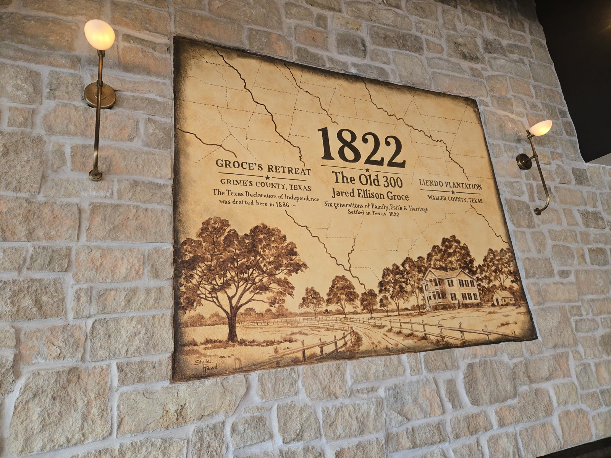

The story behind our name
A year. A family.
A story to share.
1822 marks the year Jared Ellison Groce and his family arrived in Texas as part of Stephen F. Austin’s Old Three Hundred.
For owners Kevin and Ric Kiersh, that history is personal: Groce was their fourth great-grandfather. The name 1822 honors that family connection and their Texas roots.

Rooted in family.
Looking forward to the next story.
Generations later, that connection continues through the Kiersh family and Red River Restaurants. Here on Memorial Drive, 1822 is the next chapter.
We look forward to the stories that will unfold around these tables: dinners with family, catching up with neighbors and meeting friends for a drink.
As the restaurant comes together, we’ll share more from inside. An opening date will be announced once confirmed.